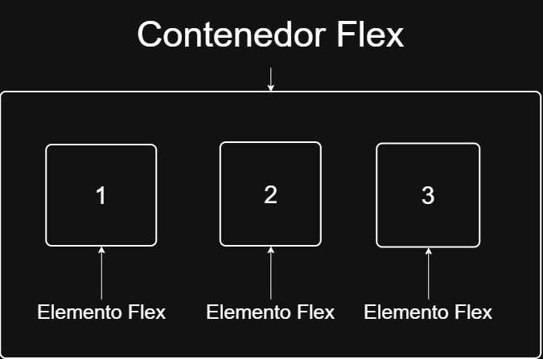
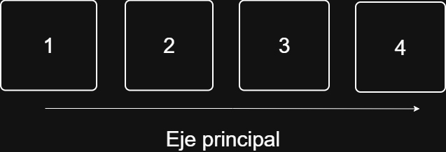
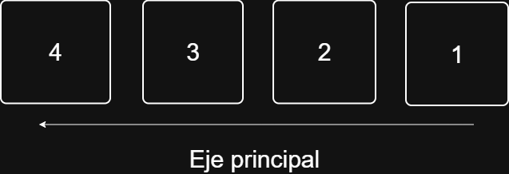
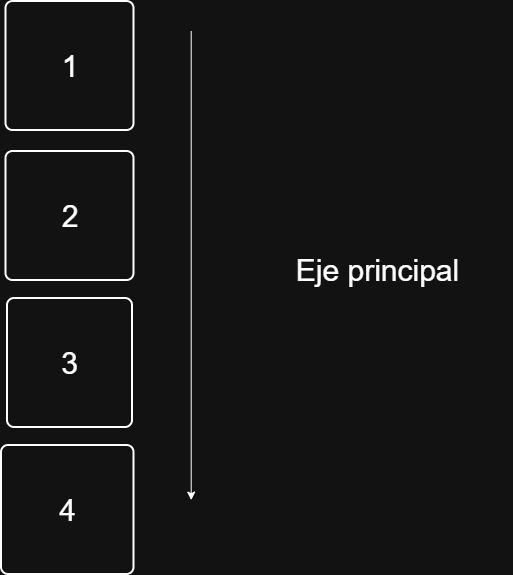
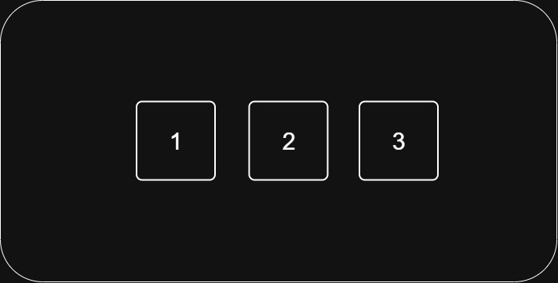

Es un modelo de diseño de CSS que permite organizar y distribuir elementos dentro de un contenedor de manera flexible.
Antes de utilizar flexbox, los elementos HTML se organizan siguiendo el flujo normal de la página. Esto puede hacer que determinadas distribuciones sean más difíciles de conseguir, especialmente cuando necesitamos:
Colocar elementos uno al lado del otro.
Centrarlos horizontal o verticalmente.
Distribuirlos dentro de un espacio.
Cambiar su dirección.
Modificar el orden de los elementos.
Flexbox facilita estas tareas mediante un conjunto de propiedades que permiten controlar tanto el contenedor como los elementos que se encuentran dentro de él.
Para comenzar a utilizar Flexbox debemos indicar qué elemento será el contenedor Flex.
Esto se realiza mediante la propiedad:
display: flex;Por ejemplo:
HTML <div class="contenedor">
<div>Elemento 1</div>
<div>Elemento 2</div>
<div>Elemento 3</div>
</div> .contenedor{
display: flex;
}
Al aplicar display: flex, el elemento .contenedor se convierte en un contenedor Flex.
Los elementos que se encuentran directamente dentro de él pasan a ser elementos Flex.

Una característica importante es que, por defecto, los elementos se organizan horizontalmente.
Esto ocurre por que Flexbox utiliza row como dirección inicial.
La propiedad flex-direction permite establecer la dirección del eje principal y, por lo tanto, la dirección en la que se organizan los elementos.
.contenedor{
display: flex;
flex-direction: row;
}
Los principales valores son: row, row-reverse, column y column-reverse.
rowEs el valor predeterminado.
Los elementos se organizan de izquierda a derecha.
CSS flex-direction: row;
row-reverseInvierte el orden de los elementos.
CSS flex-direction: row-reverse;
columnCambia la dirección del eje principal y organiza los elementos verticalmente.
CSS flex-direction: column;
justify-content
La propiedad justify-content permite distribuir los elementos sobre el eje principal.
Por ejemplo:
CSS .contenedor{
display: flex;
justify-content: center
}
Con flex-direction: row;, el eje principal es horizontal.

align-itemsPermite alinear los elementos sobre el eje transversal.
Por ejemplo:
CSS .contenedor{
display: flex;
height: 300px;
align-items: center;
}align-self
Permite modificar la alineación de un único elemento independientemente de la alineación establecida mendiante align-items.
Por ejemplo:
CSS .contenedor{
display: flex;
align-items: center;
}
.caja2{
align-self: flex-end;
}
En este caso, todos los elementos se alinean en el centro, excepto .caja2, que se posiciona al final del eje transversal.